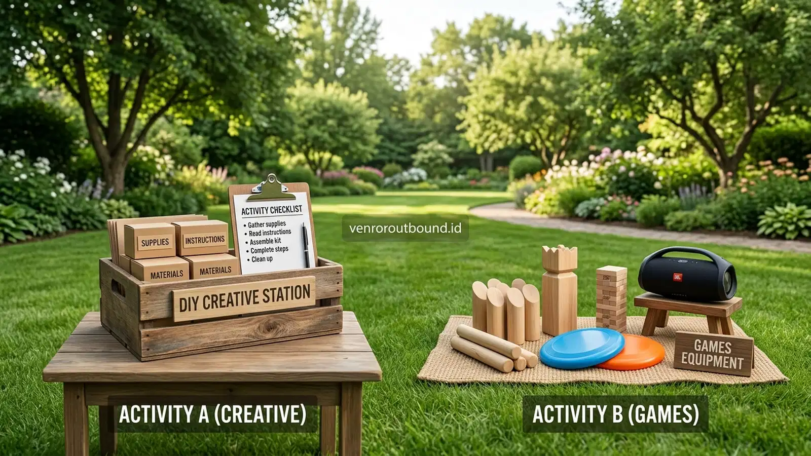

Apa Saja Komponen Biaya Family Gathering?
Jawaban singkat: Perbandingan biaya family gathering secara mandiri dan menggunakan provider perlu melihat seluruh komponen, bukan hanya harga sewa lokasi atau konsumsi. Pengelolaan mandiri dapat memberikan fleksibilitas lebih besar, tetapi panitia perlu mengoordinasikan berbagai kebutuhan sendiri. Provider dapat membantu mengintegrasikan beberapa komponen dalam satu perencanaan, tetapi total biaya tetap bergantung pada paket, jumlah peserta, lokasi, konsumsi, fasilitas, dan layanan yang disepakati.
Bagi panitia reuni akbar keluarga besar, arisan paguyuban, maupun perkumpulan alumni, pertanyaan mendasar yang selalu muncul saat tahap perencanaan adalah: apakah acara sebaiknya dikelola sendiri secara mandiri (swakelola) atau dipercayakan kepada provider family gathering? Pertimbangan utama di balik dilema ini hampir selalu bermuara pada dua faktor krusial, yaitu efisiensi anggaran finansial dan beban tenaga yang harus dikeluarkan oleh panitia.
Di satu sisi, ada keyakinan bahwa mengurus seluruh kebutuhan secara swakelola akan menekan biaya hingga titik terendah. Namun di sisi lain, kenyataan di lapangan sering kali memperlihatkan bahwa panitia keluarga merasa sangat kelelahan, stres mengoordinasikan belasan pihak terpisah, hingga akhirnya tidak sempat berbaur menikmati acara bersama sanak saudara. Untuk mengambil keputusan yang bijak dan objektif, panitia perlu membedah secara transparan seluruh pos pengeluaran nyata dari kedua pendekatan tersebut.
Biaya Family Gathering Jika Dikelola Mandiri
Pendekatan swakelola menuntut panitia bertindak sebagai event organizer internal. Seluruh elemen acara dicari, dinegosiasikan, dan dipadukan sendiri oleh anggota keluarga yang ditunjuk. Pos-pos biaya yang timbul pada model swakelola umumnya meliputi:
- Sewa Lokasi Terpisah: Biaya sewa lahan outdoor, aula pertemuan, atau gazebo di tempat wisata. Sering kali tarif sewa tempat belum mencakup tiket masuk individu per orang dan retribusi parkir kendaraan.
- Katering Makanan & Minuman: Memesan katering nasi kotak atau prasmanan dari penyedia terpisah. Panitia harus memperhitungkan biaya pengantaran (ongkos kirim) ke lokasi serta perlengkapan makan.
- Belanja Peralatan Fun Games: Membeli atau menyewa tali tambang, bola plastik, keranjang, karung goni, spidol, dan nomor regu. Meskipun tampak kecil, total pembelian perlengkapan ini bisa menyerap dana cukup signifikan dan sering kali menjadi barang tak terpakai setelah acara selesai.
- Sewa Sound System Portable: Menyewa speaker aktif nirkabel dan mikrofon dari vendor audio lokal agar instruksi panitia dapat didengar oleh seluruh peserta di lapangan terbuka.
- Biaya Desain & Cetak Banner: Mencetak backdrop foto bersama ukuran standar dan plang penunjuk arah kegiatan.
Biaya yang Sering Terlupakan Panitia Swakelola
Kerap kali panitia swakelola merasa telah membuat anggaran yang sangat hemat, namun mendadak mengalami defisit saat hari H. Hal ini disebabkan oleh pos-pos "biaya tak kasat mata" (hidden costs) yang jarang diperhitungkan di atas kertas:
- Biaya Survei Lokasi Berulang Kali: Transportasi, bensin, dan uang makan panitia saat bolak-balik memeriksa kondisi lapangan, menguji menu katering, dan mengurus izin lokasi.
- Biaya Masuk Tambahan (Corkage Fee): Biaya denda yang dikenakan pengelola venue apabila panitia membawa katering atau minuman dari luar area mereka.
- Waktu dan Energi Panitia: Waktu berharga yang terkuras untuk berbelanja, mengemas snack ke dalam kantong plastik, menyusun rundown, hingga memandu game secara manual di bawah terik matahari.
- Peralatan Tambahan Mendadak: Membeli kabel rol cadangan, baterai mikrofon darurat, terpal tambahan saat rumput becek, atau obat pertolongan pertama di apotek terdekat.
Biaya Family Gathering Menggunakan Provider
Di sisi sebaliknya, menggunakan jasa penyedia program gathering seperti Paket Hemat Family Gathering mengemas berbagai komponen kebutuhan ke dalam satu proposal terpadu. Struktur biaya provider umumnya mencakup komponen-komponen berikut:
- Area Kegiatan Terkoordinasi: Provider umumnya telah memiliki kerja sama dengan berbagai lokasi mitra, sehingga perizinan tempat dan koordinasi lapangan ditangani langsung dalam satu pintu.
- Fasilitator & Pemandu Permainan: Tersedianya tim pemandu yang bertugas memimpin sesi ice breaking dan fun games lintas generasi, menjaga antusiasme peserta, serta memastikan permainan berjalan aman dan tertib.
- Peralatan Games Lengkap: Seluruh media permainan disediakan dan dirapikan kembali oleh tim lapangan, sehingga panitia tidak perlu repot membeli atau membawa barang bawaan berat.
- Sound System Standar: Pengeras suara nirkabel yang memadai untuk area terbuka telah disiapkan sesuai kebutuhan dinamika kelompok.
- Banner Foto Acara: Pembuatan spanduk kenangan bertuliskan tema acara dan nama keluarga besar yang siap dipasang di lokasi foto.
Tabel Perbandingan Swakelola vs Menggunakan Provider
Untuk memberikan gambaran perbandingan yang netral dan berimbang, tabel berikut merangkum aspek-aspek utama dari kedua metode:
| Aspek Acara | Pengelolaan Mandiri (Swakelola) | Menggunakan Jasa Provider |
|---|---|---|
| Penyusunan Konsep | Ditangani penuh oleh panitia keluarga | Dapat dibantu provider dengan opsi modul siap pakai |
| Pencarian Lokasi | Dicari dan disurvei sendiri oleh panitia | Dapat ditawarkan sesuai pilihan paket dan kapasitas |
| Pengadaan Konsumsi | Koordinasi mandiri dengan pihak katering luar | Dapat dimasukkan ke dalam proposal penawaran terpadu |
| Peralatan Games | Disiapkan dan dibeli sendiri oleh panitia | Disediakan lengkap oleh tim penyedia jasa |
| Fasilitator Pemandu | Anggota keluarga harus merangkap memandu acara | Dapat tersedia pemandu sesuai kesepakatan paket |
| Sound System | Perlu menyewa terpisah atau membawa mandiri | Tergantung fasilitas paket yang tercantum |
| Dokumentasi | Diatur sendiri oleh panitia atau peserta | Tergantung kesepakatan paket tambahan yang dipilih |
| Beban Kerja Panitia | Beban koordinasi dan fisik panitia relatif besar | Sebagian besar beban teknis dikoordinasikan provider |
| Tingkat Fleksibilitas | Sangat tinggi, bebas mengubah susunan kapan saja | Bergantung pada paket dan kesepakatan proposal awal |
| Struktur Pembiayaan | Banyak invoice terpisah dari berbagai vendor | Dapat dikemas dalam satu rincian anggaran yang jelas |
Apakah Provider Selalu Lebih Murah?
Jawabannya adalah: tidak selalu. Membandingkan efisiensi biaya tidak dapat dilakukan hanya dengan melihat angka akhir, melainkan harus disandingkan dengan jumlah peserta dan nilai waktu panitia.
Untuk acara keluarga inti berskala kecil (di bawah 15–20 orang), mengelola acara secara mandiri di taman rumah atau menyewa saung makan santai biasanya jauh lebih ekonomis. Namun, ketika jumlah peserta bertambah menjadi 40, 60, hingga ratusan orang (melibatkan banyak kepala keluarga lintas generasi), skala ekonomi penyedia jasa mulai bekerja secara efektif. Provider memiliki negosiasi volume dengan pengelola venue dan katering, serta memiliki peralatan games yang sudah tersedia tanpa perlu dibeli baru, sehingga biaya per orang sering kali menjadi sangat kompetitif.
Baca Juga:
Bagaimana Menghitung Biaya per Peserta?
Agar penarikan iuran keluarga berlangsung adil dan tidak memberatkan, panitia dapat menggunakan formula kalkulasi matematis sederhana berikut:
Rumus Estimasi Iuran:
Biaya per Peserta = (Total Biaya Lokasi + Total Konsumsi + Biaya Games/Fasilitas + Biaya Perlengkapan + Dana Cadangan) ÷ Estimasi Jumlah Peserta Terkonfirmasi
Pastikan pembagian didasarkan pada peserta dewasa penuh, sementara anak-anak balita (usia di bawah 4 tahun) dapat dibebaskan dari iuran atau dikenakan tarif khusus konsumsi saja.

Contoh Simulasi Anggaran Hipotetis
*Catatan Penting: Tabel berikut merupakan contoh simulasi hipotetis untuk kebutuhan edukasi pembanding, bukan harga resmi atau daftar harga layanan VENDOR OUTBOUND.
| Komponen Pengeluaran | Simulasi Swakelola (Mandiri) | Simulasi Provider (Paket Terpadu) |
|---|---|---|
| Sewa Lokasi | Komponen Biaya A (Tagihan Lokasi) |
Tercakup dalam Satu Paket Terpadu (Satu penawaran mencakup area, fun games, fasilitator, audio, dan banner sesuai proposal) |
| Peralatan & Media Games | Komponen Biaya B (Beli/Sewa Alat) | |
| Pemandu Acara / Audio | Komponen Biaya C (Sewa Audio) | |
| Spanduk & Atribut | Komponen Biaya D (Cetak Percetakan) | |
| Konsumsi Peserta | Komponen Biaya E (Katering Luar) | Dapat Dipaketkan atau Disediakan Mandiri |
| Dana Cadangan (10%) | Komponen Biaya F (Kontingensi) | Komponen Biaya F (Kontingensi) |
Dari simulasi variabel di atas, terlihat jelas bahwa keuntungan terbesar provider terletak pada penyederhanaan pos A, B, C, dan D menjadi satu kesatuan yang pasti dan tidak berceceran.
Checklist Membandingkan Proposal Provider
Jika panitia memutuskan meminta penawaran dari beberapa provider, gunakan daftar periksa berikut agar perbandingan berjalan adil (apple-to-apple):
- Apakah harga yang dicantumkan sudah mencakup tiket masuk seluruh peserta atau hanya sewa area lapangan saja?
- Berapa jumlah durasi sesi permainan dan berapa fasilitator pemandu yang akan ditugaskan di lapangan?
- Apakah sound system lapangan dan baterai mikrofon sudah termasuk dalam penawaran?
- Bagaimana kebijakan pembatalan atau perubahan jadwal (reschedule) jika cuaca hujan lebat atau keadaan darurat keluarga?
- Apakah menu konsumsi dapat disesuaikan dengan preferensi lansia (rendah gula/garam) dan anak-anak?
Pertanyaan yang Harus Ditanyakan Sebelum Booking
Sebelum mentransfer uang muka (down payment) kepada penyedia jasa, pastikan panitia menanyakan hal-hal spesifik berikut:
1. "Apakah ada biaya tambahan di luar rincian proposal ini?" Pertanyaan ini penting untuk memastikan tidak ada tagihan retribusi parkir, biaya kebersihan, atau listrik yang ditagihkan mendadak di lokasi.
2. "Bagaimana rencana cadangan jika hujan turun saat jam fun games?" Penyedia yang berpengalaman selalu memiliki alternatif permainan semi-indoor atau modifikasi games di bawah selasar yang tetap seru.
3. "Berapa batas waktu pelunasan dan konfirmasi akhir jumlah peserta?" Fleksibilitas konfirmasi sangat membantu panitia jika ada anggota keluarga yang baru bisa memastikan hadir di pekan terakhir.
Bandingkan Rincian Anggaran Acara Anda Secara Gratis
Masih ragu menentukan apakah gathering reuni keluarga Anda lebih efisien dikelola mandiri atau bermitra dengan provider? Hubungi tim VENDOR OUTBOUND di WhatsApp +62 82211221909 untuk konsultasi rincian anggaran dan diskusi proposal tanpa biaya.
Konsultasi Anggaran via WhatsAppKesimpulan
Memilih antara mengelola family gathering secara mandiri atau mempercayakannya kepada provider bukanlah soal mencari siapa yang paling unggul, melainkan tentang mencocokkan kapasitas internal panitia dengan skala kegiatan yang diinginkan.
Pengelolaan mandiri sangat cocok untuk acara berskala kecil dengan panitia yang memiliki banyak waktu luang dan menikmati proses perburuan logistik. Sementara itu, memanfaatkan paket gathering terpadu dari provider menjadi solusi ideal bagi keluarga besar yang mengutamakan kepraktisan, kepastian rundown, dan ingin agar seluruh anggota keluarga—termasuk panitia inti—dapat menikmati liburan seutuhnya dengan tenang dan bahagia.
Pertanyaan Sering Diajukan (FAQ)

Arby Ardiansyah
Arby Ardiansyah merupakan penulis konten yang membahas outbound, experiential learning, team building, family gathering, dan kegiatan pengembangan karakter untuk kebutuhan sekolah, keluarga, komunitas, maupun perusahaan.